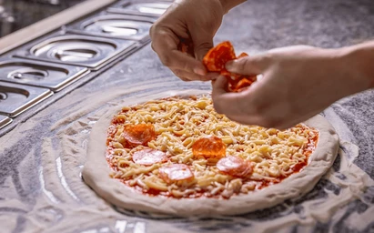

te voy a presentar la informacion referente a como cocinar una pizza mediante el video a continuacion
A continuacion te presentare informacion paso a paso con todos los ingredientes eh informacion de cada una de las partes e informacion adicional
| calorias | grasa | carbohidratos | proteina |
|---|---|---|---|
| 258 | 11,37g | 28,87g | 9,53g |
puedes encontrar aun mas detalle referente a la tabla nutricional, y lo podras agregar a tu aplicacion de seguimiento de caloriasen el siguiente link: Fatsecret
cualquier recomendacion relacionada a mejorar la receta de pizzas puedes enviarla a los siguientes canales
| redes | aparecemos |
|---|---|
| @Michipizzas | |
| Michipizzas | |
| 3000000000 |